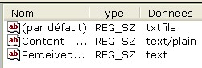

Manipulation d'extensions avec la base de registre
Bonjour à tous :D .
Ce tuto à pour but de vous apprendre à gérer manuellement la base de registre pour les associations de fichiers.
La base de registre n'ayant pas d'équivalent sous d'autres systèmes d'exploitation, ce tuto est "réservé" aux utilisateurs de Windows. Mais si vous êtes sous un autre système et si vous souhaitez quand même le lire, allez-y !
Voilà une question que nombre de débutants ou de personnes utilisant peu Windows se posent en entendant parler de la "Base de Registre".
En gros, la base de registre est une sorte de fichier qui contient toutes les informations relatives à Windows. Par exemple :
les différentes sessions Windows ;
les paramètres du (des) réseau(x) ;
les associations de fichiers.
etc.
En règle générale, très peu de personnes interviennent directement sur la base de registre car Windows propose nombre de possibilités qui la modifient de manière sûre. Mais le fait de la manipuler en direct présente l'avantage de pouvoir modifier des choses que Windows ne permet pas. :)
Les concepteurs de Windows, sachant que certains voudraient modifier directement la base de registre, ont prévu pour les utilisateurs un explorateur (un peu comme le poste de travail de Windows).
Cool, un explorateur pour nous aider. Mais... mais il est où ? o_O
Pour que tout le monde ne puisse pas l'ouvrir et faire n'importe quoi, les créateurs de Windows l'ont un peu "caché" :magicien: . Pour y accéder, il suffit de cliquer sur Démarrer -> Exécuter..., ou de presser Windows + r (Windows est la touche du clavier entre le Ctrl gauche et le Alt gauche du clavier).
Ensuite, il suffit de taper regedit dans la zone de texte et de presser Entrer :
Il faut savoir que manipuler la base de registre peut se révéler dangereux, c'est pourquoi il faut savoir prévoir des mesures de sécurité pour éviter des conséquences malencontreuses.
Pour éviter toute manipulation qui pourrait avoir un effet désastreux sur Windows, il va falloir enregistrer cette base de registre. Pour cela, allez dans le menu Fichier, puis cliquez sur Exporter. Dans la nouvelle fenêtre qui apparaît, sélectionnez l'endroit où vous souhaitez enregistrer le fichier de sauvegarde et donnez-lui un nom. Enfin, dans la zone Étendue de l'exportation, choisissez Tout (pour tout sauvegarder) puis cliquez sur Enregistrer.
Si la base de registre ne marche plus où si vous souhaitez "annuler" ce que vous venez de faire, il faut ouvrir la base de registre et allez dans le menu Fichier et cliquer sur le bouton Importer ....
Ensuite, vous n'avez plus qu'à indiquer la sauvegarde que vous devez avoir faite, et Windows se charge du reste.
En clair, Windows va vider la base de registre (ou juste la zone concernée) et remplacer son contenu par le fichier que vous avez enregistré. De cette manière, toutes les modifications faites après la sauvegarde seront "annulées".
Voilà tout ce qu'il y a à dire sur les bases même de la base de registre.
Le prochain chapitre va vous expliquer ce que nous allons faire dans ce tuto, et surtout pourquoi...
Pourquoi manipuler la base de registre directement ?
Déjà, il faut savoir que par manipulation directe, j'entends la manipulation physique de la base de registre, c'est-à-dire sans utiliser un code dans un programme. Il est en effet possible de manipuler la base de registre de Windows avec un langage de programmation (WinAPI, par exemple, le permet). Mais le but de ce tuto n'est pas de vous apprendre à manipuler la base de registre avec un langage de programmation. Si ceci vous intéresse, allez voir le tuto sur le WinAPI écrit par Kidpaddle2.
Et si j'ai décidé de vous faire manipuler directement la base de registre, c'est pour une seule raison...
Cette raison, la voici : Windows propose à ses utilisateurs des outils pour exécuter ces manipulations en toute sécurité. Mais malgré ça, ces outils sont peu pratiques et incomplets (étrange de la part de Windows... :p ).
La manipulation directe permet donc d'avoir plus de possibilités, comme celle de pouvoir créer une action commune à tous les fichiers.
C'est pourquoi nous allons nous pencher uniquement sur la manipulation physique.
Voilà tout ce qu'il y avait à dire sur le but et la raison de ce tuto.
Maintenant nous allons attaquer ( :pirate: ) la pratique. Prêts ?
Voici la fin de cette première partie.
Elle était très importante. Mieux vaut vous reposer et penser à tout ça avant de commencer la pratique car la sécurité est quelque chose de très important, et vous pourriez vivement regretter de ne pas l'avoir lue correctement.
La plupart des personnes (même un grand nombre de programmeurs PHP ou XHTML) n'utiliseront peut-être jamais de nouvelles extensions pour Windows...
Mais alors, pourquoi faire ce tuto si personne ne va l'utiliser ?
Tout simplement parce qu'il n'est pas obligatoire de créer une nouvelle extension pour que ce tuto vous soit utile.
Mais pour vraiment comprendre depuis le départ, nous allons créer une nouvelle extension.
Par exemple, imaginez que vous êtes en train de réaliser un super-jeu de voiture (ou autre), et que vous donniez à l'utilisateur la possibilité de sauvegarder. Il va bien falloir que vous créiez un nouveau type de fichier, qui contiendra toutes les informations nécessaires pour la sauvegarde.
Après de longues délibérations avec vous-mêmes, vous décidez que votre sauvegarde aura l'extension .my_game (pourquoi pas ?).
Maintenant, cela fait, penchons-nous plus en détail sur ce que nous pourrons faire avec cette nouvelle extension.
Vous décidez que votre extension personnalisée ne sera pas une simple extension, mais que vous pourrez l'ouvrir et l'éditer.
Pour chacune de ces actions, vous allez devoir définir ce qui va se produire.
L'action Ouvrir
Pour cette action, vous décidez que votre jeu de voiture se lancera et démarrera directement sur la sauvegarde ouverte.
Pour cela, vous devrez donner le chemin d'accès (là où il est rangé sur votre disque) de votre programme. Imaginons que celui-ci soit : C:\Mes Jeux\Car game\car.exe. (Ceci est un exemple parfaitement aléatoire. Vous pouvez décider de le changer quand vous le souhaitez.)
Il faudra aussi passer la sauvegarde en argument à votre programme (pour récupérer les arguments dans un programme C, veuillez consulter le tuto sur Les paramètres de la fonction main de FFMx). Mais ce passage de l'argument peut être automatiquement géré par Windows. Nous verrons cette automatisation plus loin, lors de la définition, dans la partie pratique, de l'action à exécuter.
L'action Éditer
L'édition de votre sauvegarde personnelle se fera avec le Bloc-notes de Windows. Le chemin de l'exécutable est : C:\WINDOWS otepad.exe. (Au contraire de l'action précédente, ce chemin est normalement fixe.)
Comme pour l'action Ouvrir, le passage des arguments sera le même. Nous verrons cela plusieurs chapitres plus loin.
Ultime décision, vous choisissez de vous offrir le summum, la plus grande des classes au sujet des extensions, une icône ! (Comment ça, j'en rajoute !? :p )
Pour faire cela, vous dessinerez une superbe icône, faite spécialement pour les sauvegardes de votre jeu. Puis vous l'enregistrez. Son chemin d'accès est donc (c'est totalement arbitraire) : C:\Mes Jeux\Car Game\my_icône.ico.
Il est aussi possible que vous souhaitiez utiliser une icône contenu dans un fichier qui n'est pas un fichier *.ico (exécutable (*.exe), extension de l'application (*.dll), librairie d'icône (*.icl), etc.). Dans ce cas, il suffit de prendre le chemin d'accès du fichier. Puis ensuite il faudra donner son ID. Mais nous reviendrons là-dessus quand nous parlerons de l'association de l'icône.
Voilà, les bases ont été mises en place. Maintenant que le décor est planté, nous allons faire un peu de théorie (vraiment pas beaucoup) sur le fonctionnement de la base de registre.
Ensuite on attaquera réellement la pratique (et ce sera pas trop tôt, n'est-ce pas ? :-° ).
Si vous observez un peu la base de registre, vous pourrez voir, comme l'explorateur Windows, qu'elle est "découpée" en plusieurs répertoires et sous-répertoires. Ces répertoires s'appellent des clés (on parle aussi de clés de registre).
Et vous pouvez aussi noter que chacune de ces clés (les "répertoires") contiennent des "fichiers" qui sont appelé des valeurs (par contre, ici, on ne dit pas valeur de registre, juste valeur).
Il existe un seul type de clés. En revanche, il existe 5 types de valeurs, qui sont :
valeur chaîne (REG_SZ) : c'est une chaîne de caractères. Nous n'utiliserons que celle-ci dans nos manipulations ;
valeur binaire (REG_BINARY) : c'est une valeur binaire (ex. : 01110101) ;
valeur DWORD (REG_DWORD) : c'est une valeur hexadécimale (ex. : 0x8F) ou décimale (ex. : 67) ;
valeur de chaînes multiples (REG_MULTI_SZ) ;
valeur de chaînes extensibles (REG_EXPAND_SZ).
Un petit screenshot ?
Une vue de toutes les clés existantes
La valeur chaîne peut aussi contenir une liste d'hexadécimaux sous la forme {B41DB860-8EE46-...}.
Le texte en gras est le type de valeur (la valeur qui apparaît dans la colonne type de l'explorateur de la base de registre).
Et bien sûr, chaque valeur à un nom. Mais il y a une valeur qui est toujours là, c'est la valeur nommée (par défaut). Elle est de type REG_SZ, c'est-à-dire qu'elle contient une chaîne de caractères. Ce sera la clé que nous utiliserons le plus souvent lors de nos manipulations.
Voici la devise de Microsoft (et donc de Windows) : "Pourquoi faire simple quand on peut faire compliqué ?". ( o_O )
En clair, j'essaie de vous expliquer que Microsoft n'aime pas la simplicité. Et la base de registre n'échappe pas à cette règle "universelle" de Microsoft.
Pour passer d'une extension à ses informations, ce n'est pas simple. En effet : si vous cherchez des informations en rapport à l'extension .txt (les fichiers texte), il faut faire cela :
ouvrir la base de registre (regedit) ;
aller dans la clé principale HKEY_CLASSES_ROOT ;
ouvrir la clé qui porte le nom de l'extension (ici : .txt) ;
La clé .txt

lire la valeur de la valeur(par défaut) ;
La valeur(par défaut)
aller dans la clé qui porte le nom de la valeur(par défaut) (celle que vous venez de lire). Ici, c'est txtfile ;
et là, vous êtes dans la clé qui contient toutes les informations sur votre extension (.txt).
La clé txtfile
Maintenant, regardons de plus près ce que contient la clé de notre exemple (txtfile).
La clé de notre exemple est constituée de plusieurs sous-clés et de plusieurs valeurs.
Regardons en premier, la valeur(par défaut). Celle-ci contient le texte qui sera affiché dans la colonne type de l'explorateur Windows (ici : Document texte).
Ensuite la valeur(par défaut) de la sous-clé DefaultIcon contient le chemin d'accès de l'icône. Le chiffre derrière la virgule est l'ID de l'icône dans la .dll (souvenez-vous de ce que je vous ai dit à propos des icônes qui ne sont pas dans un fichier d'icône).
Donc, pour indiquer une icône précise dans un fichier, il faut mettre le chemin d'accès du fichier, suivi d'une virgule puis de l'ID (généralement, la première icône a l'ID 0, puis 1, 2, etc.).
Maintenant, entrons dans la sous-clé shell. Elle contient elle-même plusieurs sous-clés. Chacune de ces sous-clés correspond à une action différente. Par action, j'entends une action possible à exécuter lorsque vous faites un clic droit sur un fichier.
Prenons en exemple l'action open (ouvrir en français). Dans cette sous-clé il y a... encore des sous-clés. :waw: Il ne peut y avoir que 2 sous-clés maximum dans chaque action :
la sous-clé command (obligatoire) : sa valeur(par défaut) contient le chemin du programme à lancer lors du clic sur l'action ;
la valeur(par défaut) de la sous-clé command
la sous-clé ddeexec (facultative) : elle contient toutes les informations sur l'utilisation de DDE.
Je ne vous parlerai pas de l'utilisation de DDE maintenant car je le ferai dans plusieurs chapitres.
Pour l'instant, nous utiliserons donc que la sous-clé command.
Vous devez désormais mourir d'envie :honte: de passer à la pratique...
Si vous avez bien lu la partie précédente, vous devriez arriver à vous débrouiller seuls. Mais je suis de bonne humeur, donc je vais vous guider.
Pour commencer, on ouvre la base de registre (Comment ça... vous vous en doutez ? :p ).
Ensuite on fait clic droit sur HKEY_CLASSES_ROOT et on clique sur Nouveau -> Clé.
Maintenant, vous donnez à cette nouvelle clé le nom de l'extension à créer : .my_game (c'est l'exemple).
Puis dans la valeur (par défaut), vous mettez le nom de la clé associée : Car_Game.Sauvegarde (c'est un exemple, c'est vous qui choisissez. Le tout est que ça corresponde entre cette valeur et la clé associée que vous allez créer).
Un fois cela fait, on crée une autre clé qui porte le nom de la clé associée (dans mon exemple : Car_Game.Sauvegarde). Cette clé doit être créée dans la clé principale HKEY_CLASSES_ROOT.
Faites un clic droit sur la clé que vous venez de créer et allez sur l'action Nouveau -> Clé. Donner le nom DefaultIcon à cette nouvelle clé. Si vous avez bien suivi, vous devriez savoir que cette clé va vous servir pour la gestion de l'icône.
Maintenant, créez un nouvelle sous-clé appelé shell (oui, c'est pour les actions). Dans cette sous-clé, créez 2 nouvelles sous-clés nommées respectivement Ouvrir et Editer qui correspondent aux 2 actions que nous avons choisies.
Et en dernier, pour finir, créez une nouvelle sous-clé (je sais, il y en a beaucoup) appelée command dans chaque action.
Si vous avez tout suivi, vous devez obtenir quelque chose comme ça :
Une photo de la base de registre
Voilà pour la création des clés. Le prochain chapitre vous indiquera ce qu'il faut mettre dans les valeurs (par défaut) des clés que vous venez de créer.
Par "sous-clés principales", j'entends des sous-clés shell et DefaultIcon.
Commençons par DefaultIcon. Si vous avez bien compris et appris ce que je vous ai dit, vous devez déjà savoir ce que l'on va mettre dans la valeur (par défaut) de cette sous-clé.
En effet, il s'agit du chemin d'accès de l'icône (ou de l'image) associé à votre extension. Donc, double cliquez sur la valeur (par défaut). Puis dans le champ de saisie, mettez la chemin d'accès de votre icône. Si vous suivez mon exemple, sa valeur doit désormais être : C:\Mes Jeux\Car Game\my_icône.ico.
Ce qui doit vous donner ça :
La valeur(par défaut)de DefaultIcon
Maintenant, passons à shell. Ici, rien de bien compliqué. Notre action définie par défaut va être Ouvrir. Donc il suffit de mettre Ouvrir dans (par défaut) de shell.
Il n'y a rien à mettre dans les clés des actions (Ouvrir et Editer).
Par contre, il faut modifier la valeur (par défaut) de leur sous-clé command.
Dans chacune de ces valeurs, nous allons mettre le chemin de l'exécutable à lancer lors du clic sur l'action.
Je pense que je peux vous laissez faire ...
Voici quand même 2 images pour vous aider :
La valeur de command de Ouvrir
Et celle de command de Editer.
Hé ! Tu nous roules, là ! Pourquoi t'as mis des guillemets autour du chemin d'accès et un "%1" après ? :colere2:
Aurais-je oublié de vous dire quelque chose ? :ange:
Bon, doucement, je vais vous expliquer. Les guillemets autour du chemin d'accès sont obligatoires, sinon ça ne fonctionne pas.
Quand au "%1", ça a rapport avec les arguments du programme. Souvenez-vous... Au tout début, je vous ai vaguement parlé des arguments du programme, et surtout de celui où l'on devait indiquer quel fichier était ouvert ou édité. Eh bien, le %1 indique à Windows qu'il doit vous donner le chemin d'accès du fichier ouvert (voilà comment automatiser le passage de cet argument). Pratique, non ?
Ok, il suffisait de le dire. Et les " autour du %1 ?
Tout simplement pour que Windows considère le %1 comme une chaîne de caractères et donc 1 seul argument, et non comme une suite d'arguments s'il y a des espaces.
C'est bien ce que je pensais. Ce titre ne vous dit pas grand chose, mais je n'avais aucune autre idée, alors...
L'action Nouveau document, vous l'avez forcément déjà croisée, et presque à tous les coups, déjà utilisée.
Heu ... Désolé de te décevoir, mais je n'ai jamais vu (et encore moins utilisé) une action qui porte ce nom. Alors explique-nous vraiment ce que c'est, sinon je te... tu veux bien ?
Pas la peine de se fâcher ! Quand je vous dis que vous l'avez déjà vue, c'est vrai. Mais vous ne l'avez pas vue sous cette appellation. Mais avant d'en parler, il faut savoir que cette action apparaît sur aucune extension.
Cette action (enfin ces actions) sont situées dans un menu contextuel spécial.
Comment y accéder ? Clic droit sur un zone vide de l'explorateur. Puis allez dans le sous-menu Nouveau. Vous voyez ?
Le sous-menu Nouveau
Donc, ce chapitre vous propose la possibilité de rajouter une ligne correspondant à un nouveau type de fichier.
Évidemment, pour créer cette action, il faut une clé spéciale.
En fait, pour chaque action de ce type, il existe une clé différente.
Quoi ?! Mais pourquoi ne pas avoir fait une clé unique comme pour * ?
Tout simplement pour que Windows puisse savoir avec quel programme il faut ouvrir ces nouveaux fichiers. Ils auraient (les concepteurs de Windows) pu créer une valeur qui l'indique, mais ça aurait été trop compliqué.
Donc, la clé nécessaire à cette action est, en fait, une sous-clé de votre clé .my_game (c'est un exemple).
Quelques chapitres plus haut, j'ai dit que les clés commençant par "." étaient seules et ne comportaient qu'une seule valeur. Ceci n'est pas tout à fait exact. Vous avez dû remarquer que certaines de ces clés, commençant par ".", avaient d'autres valeurs et des sous-clés.
Ces valeurs et sous-clés servent à apporter (généralement) des précisions sur l'extension. Et l'une de ces sous-clés est celle qui nous intéresse.
Avant de passer à la pratique et de créer cette clé, nous allons voir ce qu'elle va contenir.
Cette clé va contenir une valeur (par défaut) (vous devriez le savoir) qui, ici, ne nous intéresse pas.
Mais où va-t-on mettre ses caractéristiques ?
Dans de nouvelles valeurs de type chaîne (REG_SZ).
Il peut en exister 3, mais chacune joue un rôle défini :
la valeur NullFile : contient n'importe quelle valeur. Si on crée un nouveau fichier, il est vide. Ex. :
La valeur NullFile
la valeur FileName : contient le chemin d'accès d'un fichier. Si on crée un nouveau fichier, il aura le contenu du fichier pointé par la clé FileName. Ex. :
La valeur FileName
la valeur Data : contient du texte. Si on crée un nouveau fichier, il contiendra le contenu de la clé Data. Ex. :
La valeur Data
La clé n'est censée contenir qu'une seule de ces valeurs. Si par hasard, vous créez la valeur NullFile et FileName, l'ordre des priorités s'établit comme suit :
la valeur NullFile domine tout, c'est-à-dire que si elle existe, c'est elle qui est prise en compte ;
ensuite, c'est FileName qui domine ;
puis, en dernier, Data.
Voilà tout à propos de la théorie. Je pense que vous vous débrouillerez.
Pour ceux qui n'yarrivent pas...
Voici un exemple :
L'arbre de la base de registre
La valeur NullFile
Supprimer l'action
Pour cela, il suffit de supprimer la sous-clé ShellNew (si ne vous savez pas faire, allez dans l'annexe, un chapitre explique comment faire).
Voilà, maintenant vous savez...
Ce chapitre révèle un point utile et nous démontre que les outils fournis par Windows pour intervenir sur les extensions sont très incomplets. En effet, les outils de Windows ne permettent pas de créer ce genre d'action, et donc nous sommes obligés de passer par la base de registre.
Voilà, c'est la fin de cette deuxième partie.
Elle n'est pas terminée. Je pense ajouter des chapitres sur l'utilité d'autres valeurs dans les clés, ainsi que sur l'utilisation de DDE.
Maintenant, vous pouvez passer à la troisième partie qui traite d'actions pour tous les fichiers et tous les répertoires.
Vous vous demandez sûrement : "Mais à quoi ça peut bien servir de créer un action commune ?".
La réponse est simple. Imaginez que vous possédiez un programme de cryptage. Il serait intéressant de pouvoir choisir l'option Crypter dans le menu contextuel de chaque fichier, voire de chaque répertoire.
Pour les fichiers, il existe une technique qui dit de créer la clé et sa valeur de l'action Crypter et de l'y placer dans chaque extension. Le seul problème est que vous possédez au minimum plus d'une centaine d'extensions.
Vous imaginez-vous en train de parcourir chaque extension, aller dans la clé associée puis de coller la clé de votre action ?
Vous risquez de perdre un temps fou et de faire de nombreuses erreurs.
Puis un autre problème se pose. Chaque fois que vous installez un programme, celui-ci crée de nouvelles extensions (non pas à chaque fois, mais souvent). Ceci impliquerait que vous parcouriez de nouveau toute la base de registre afin de la mettre à jour.
Impensable !
Sachant cela, Microsoft a doté sa base de registre d'une clé spéciale qui concerne tous les fichiers. C'est cette clé que nous allons découvrir et apprendre à utiliser.
La clé très spéciale de Microsoft pour manipuler tous les fichiers en même temps est appelé " * ". C'est la première clé de HKEY_CLASSES_ROOT. Le symbole de l'étoile (*) représente n'importe quelle extension de fichier, quelle que soit sa longueur, etc.
Même les fichiers sans extension et les liens (qui ont l'extension caché .url) sont concernés.
Il n'y a qu'une seule extension qu'elle ne représente pas : celle des répertoires. Mais c'est normal, car les répertoires n'ont pas d'extension, car ils représentent un type à part. Nous verrons un peu plus loin la clé qui permet de manipuler tous les répertoires en même temps.
Si vous ouvrez la clé *, vous pourrez voir que, au contraire des extensions habituelles, elle n'a pas de valeur pointant sur une clé associée. Ceci est normal, car ce n'est pas une extension (elle n'a pas de point devant elle). Donc, c'est directement une clé associée.
Ainsi, pour définir une action à tous les fichiers (puisque c'est le but de cette clé), il suffit d'aller dans la sous-clé shell.
Et puis à partir de là, de créer une nouvelle action comme je vous ai appris à le faire.
Le nom de l'action qui doit apparaître n'est plus le nom de l'action, mais la valeur (par défaut) de la clé qui porte le nom de l'action :
Pour cet exemple, nous allons créer une action commune pour crypter les fichiers. Nous allons considérer que votre programme est rangé dans : C:\programme files\Cryptage 4.0\crypt.exe.
Vous vous demandez peut-être "Mais pourquoi vouloir en enlever ?".
Réfléchissez un peu. Pour les actions, c'est simple : une action dont vous ne vous servez plus, doit être enlevée pour faire de la place dans le menu contextuel, et pour supprimer le risque de cliquer dessus par erreur.
Et pour les extensions, c'est rare mais il est possible qu'une extension ne vous serve plus. Voilà pourquoi l'enlever : elle prend de la place en mémoire (oh, pas beaucoup, mais à force de toutes les laisser...). Et imaginons que vous ayez créé une extension par erreur, plutôt que de la laisser, autant la supprimer.
Changer le nom de la Corbeille et du Poste de travail
Quoi ?! On peut faire ça ? :waw: Mais pourquoi ne pas l'avoir dit avant ?
Tous simplement parce que je l'ignorais. J'ai découvert ça il y a peu, et je vous en fait profiter.
Voici comment faire :
allez dans la clé générale HKEY_CLASSES_ROOT ;
puis allez dans le sous-clé CLSID. Voici une photo :
La sous-clé CLSID
ensuite, trouvez la clé {645FF040-5081-101B-9F08-00AA002F954E} ;
il suffit maintenant de modifier la valeur (par défaut) qui contient le nom de la corbeille.
Voilà pour changer le nom de la corbeille.
Pour changer le nom du Poste de travail, il faut faire exactement la même chose, mais la sous-clé de CLSID à trouver est {20D04FE0-3AEA-1069-A2D8-08002B30309D}. La valeur (par défaut) contient le nom.
Voilà tout ce que j'avais à dire... Ces clés ne sont pas forcément utiles, mais on ne sait jamais.
Je sais, j'en ai déjà parlé, mais tant pis : j'en reparle ! :diable:
La clé qui les désigne est la clé *.
Les répertoires
C'est la clé Directory.
Les fichiers inconnus
La, je parle de tous les fichiers qui n'ont pas d'extension (ex. : makefile).
La clé qui permet de leur définir des actions (on ne sait jamais, ça peut servir) est unknown (inconnu en anglais).
Voilà ce qui a à dire sur les clés bizarres et étranges.
Voici la fin de cette dernière partie, les annexes.
En espérant qu'elles vous seront utiles.
Ceci est la fin de ce big-tuto sur la manipulation d'extensions avec la base de registre. Ce tutoriel n'est pas fini, venez donc le voir de temps en temps.
Informations recueillies et mises en page par Darkelfe.